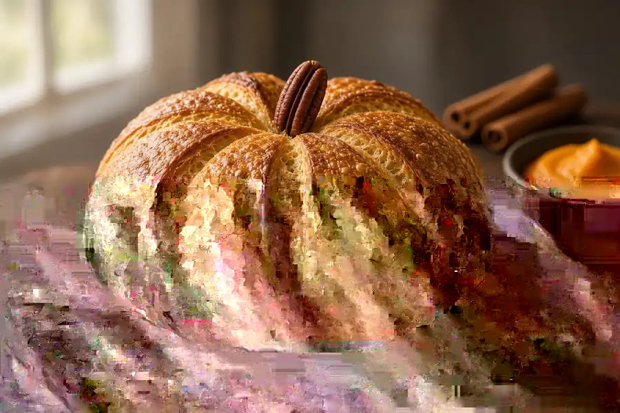

Pumpkin-Shaped Sourdough
Overnight Dutch-oven loaf flavored with pumpkin puree and warm pie spice, then tied with oiled twine so it bakes into pumpkin ribs. Weigh the flour, water, and puree. Cool fully before you pull the strings.

12 slices
By
Yield: 1 loaf (about 12 slices)
Prep:
Cook:
Total:
Ingredients
- 100 g ripe sourdough starter (100% hydration), fed 4 to 6 hours earlier and doubled
- 210 g water, about 80 to 85 F
- 150 g canned pumpkin puree (plain pumpkin, not pie filling)
- 25 g honey
- 500 g bread flour
- 10 g fine sea salt or kosher salt
- 8 g pumpkin pie spice (about 1 tablespoon)
- Rice flour or extra bread flour, for dusting the proofing basket
- Neutral oil, for soaking the kitchen twine
- 4 pieces kitchen twine, each about 24 inches
- 1 pecan half or short cinnamon stick, for the stem after baking
Instructions
- Feed the starter 4 to 6 hours before you mix. It is ready when it has doubled, looks domed, and a spoonful floats in water. If it is sluggish, give it one more feeding at 1:2:2 (starter:flour:water) and wait.
- In a large bowl, whisk 100 g ripe starter into 210 g warm water until milky. Stir in 150 g pumpkin puree and 25 g honey until smooth. Add 500 g bread flour, 8 g pumpkin pie spice, and 10 g salt. Mix with a wet hand or dough whisk until no dry flour remains. The dough will feel tackier than a plain country loaf. Cover. Rest 30 minutes.
- Bulk ferment 4 to 5 hours at 75 to 78 F. During the first 2 hours, do 4 sets of stretch-and-folds, 30 minutes apart: wet a hand, lift one side, stretch up, fold over, turn the bowl, repeat 4 times. Pumpkin dough slacks faster; keep the folds gentle and stop when it feels airy, jiggly, and about 50 to 75% larger. In a warm Georgia kitchen the bulk often finishes closer to 3 1/2 to 4 hours.
- Turn the dough onto a lightly floured counter. Preshape into a tight round. Rest uncovered 20 minutes.
- Dust a banneton or towel-lined bowl with rice flour. Flip the dough, letter-fold, then drag it toward you to build surface tension. Place seam-side up in the basket. Pinch the seam closed.
- Cover and refrigerate 12 to 16 hours. The dough should feel puffy and spring back slowly when poked. If it slumps, bake it anyway and expect a shorter pumpkin.
- Set a Dutch oven (5 to 6 quart) on the middle rack. Heat the oven to 500 F for 45 minutes with the pot inside. Keep the dough in the fridge until the last minute. Soak the 4 twine pieces in a little oil so they will not fuse to the crust.
- Lay a sheet of parchment on the counter. Arrange the oiled twine in a star: two strings crossing as a plus sign, two more crossing as an X, all meeting at the center. Turn the cold dough out of the basket onto the center of the star, seam-side down. Tie each pair of string ends up and over the loaf so you get 8 even ribs. Knot loosely at the top — snug enough to mark the shape, not tight enough to cinch the dough. Trim long tails.
- Lower the parchment and loaf into the hot pot. Cover. Bake 20 minutes. Uncover, drop the oven to 450 F, and bake 22 to 28 minutes more until the crust is deep amber and a thermometer in the center reads 205 to 210 F.
- Lift onto a rack. Snip and peel off the twine while the loaf is hot. Press a pecan half or cinnamon stick into the center for a stem. Cool at least 2 hours before slicing — the crumb is still setting. Store cut-side down on the board for a day, then bag. Toast day-two slices in a skillet with butter.